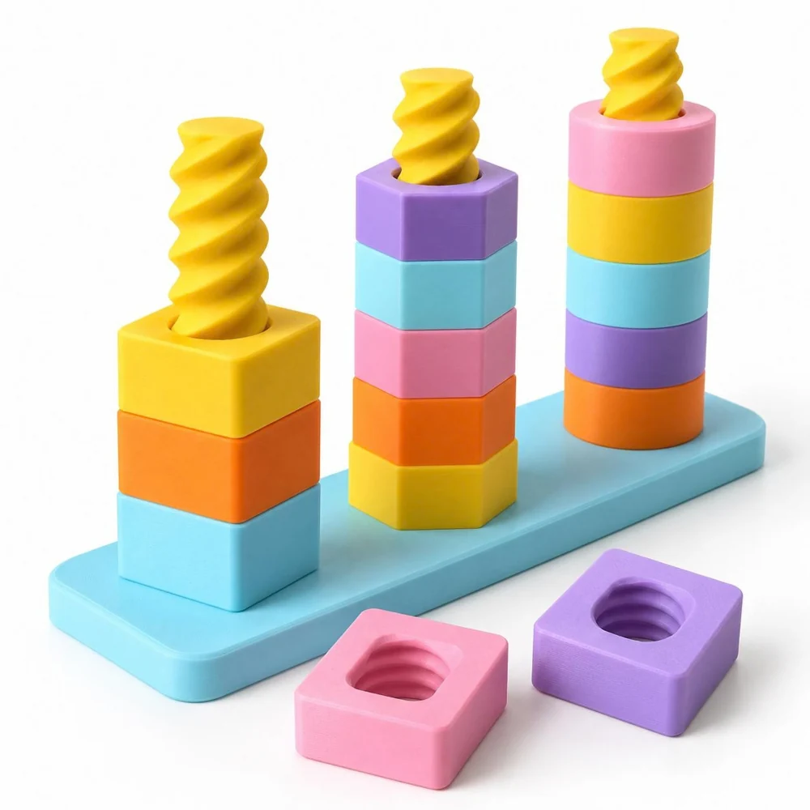
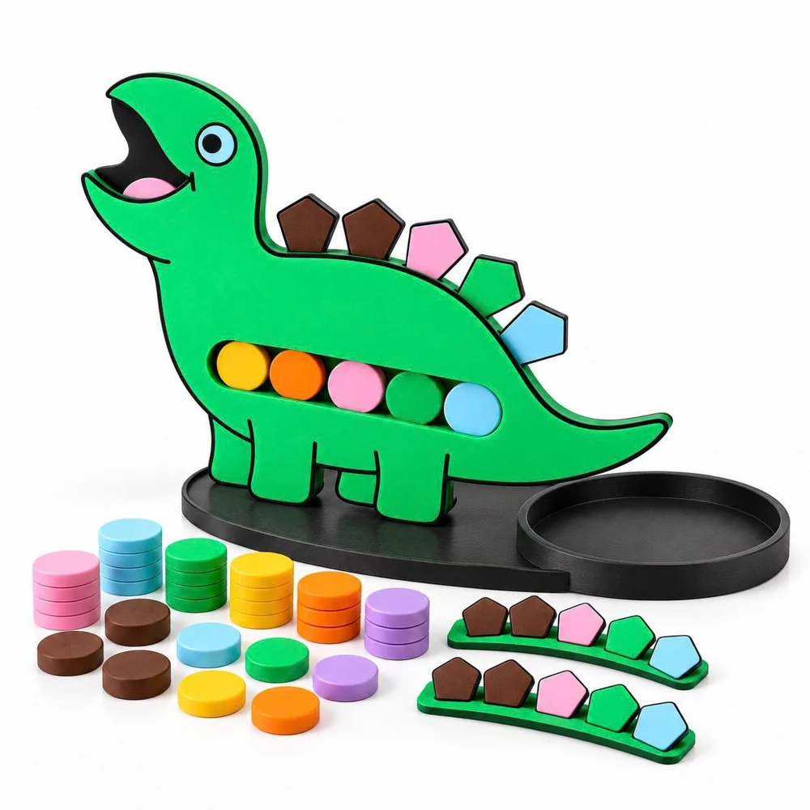

Temukan pilihanmu
Jelajahi koleksi dan buka detail aktivitas yang menarik perhatian.
Mulai dari satu bentuk, satu warna, satu ide.
Jelajahi pilihan aktivitas Montessori untuk
ruang kelas dan rumah.

Temukan aktivitas yang menarik perhatian.
Lihat detailnya, lalu susun pilihanmu.
Coba nama lain atau lihat semua pilihan aktivitas.

Sedikit mencoba.Dari memasukkan manik, menyusun bentuk, sampai merakit kereta. Setiap pilihan mengajak anak terlibat dalam aktivitas yang bisa dilihat dan disentuh.
Jelajahi katalog sebagai referensi kegiatan untuk rumah dan kelas, lalu pilih aktivitas yang ingin kamu kenalkan.
Temukan aktivitasnyaCoba alur pemesanannya di sini.
Belum ada pembayaran atau pengiriman nyata.
Jelajahi koleksi dan buka detail aktivitas yang menarik perhatian.
Tambahkan produk, atur jumlahnya, lalu lihat subtotal harga contoh.
Jalankan simulasi checkout dan unduh ringkasannya untuk ditinjau.
Belum. Semua harga di preview ini merupakan contoh untuk mencoba tampilan dan alur belanja. Harga jual final ditetapkan TIGO LAB sebelum penjualan dibuka.
Halaman detail menampilkan gambaran aktivitas berdasarkan katalog. Jumlah komponen, bahan pendamping, dan kelengkapan paket final masih perlu dikonfirmasi oleh tim TIGO LAB.
Tidak. Keranjang dan ringkasan simulasi hanya tersimpan di browser yang kamu gunakan. Tidak ada pembayaran, pemesanan nyata, atau pesan yang dikirim.